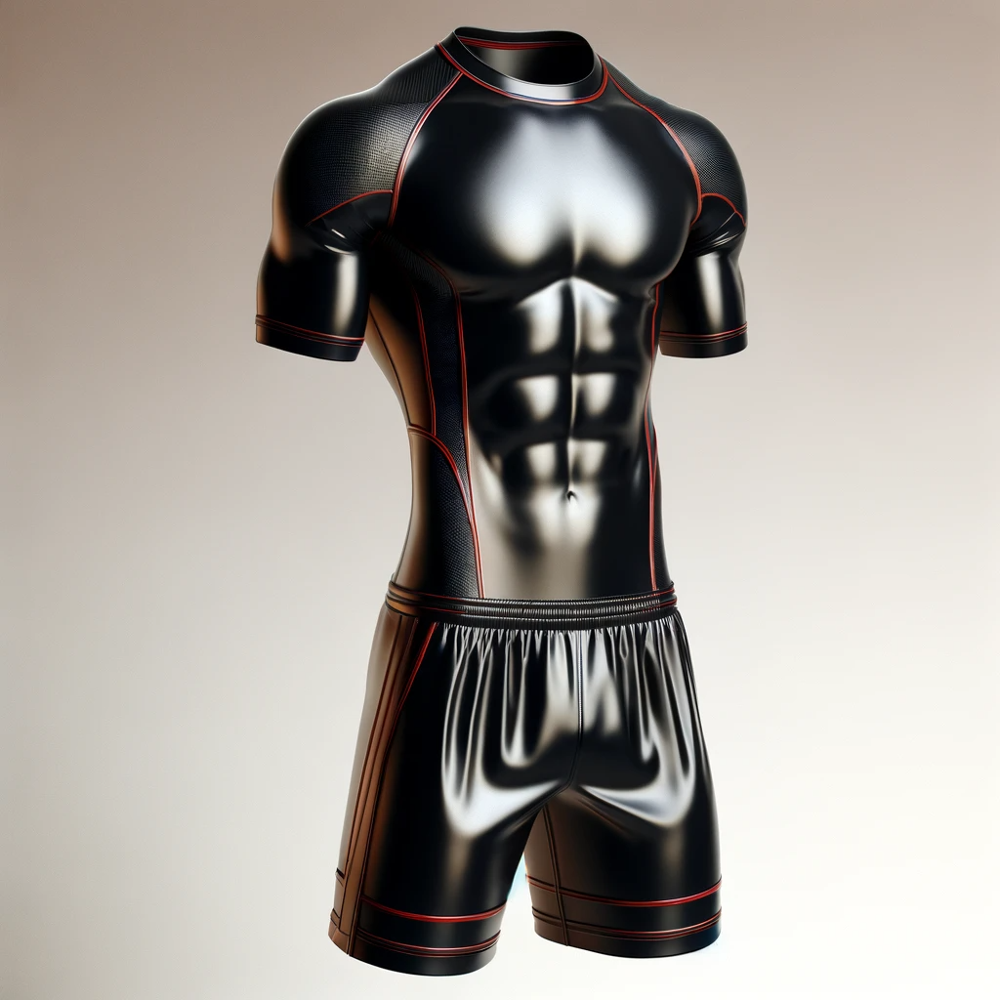

Tenue de sport
Un ensemble de sport en latex noir, comprenant un t-shirt ajusté à manches courtes et un short de sport. Le tissu est brillant, avec des détails en rouge le long des coutures, offrant un look moderne et athlétique.
Un ensemble de sport en latex noir, comprenant un t-shirt ajusté à manches courtes et un short de sport. Le tissu est brillant, avec des détails en rouge le long des coutures, offrant un look moderne et athlétique.
Un costume élégant en latex noir, avec une veste de costume à deux boutons et un pantalon ajusté. Le costume a un aspect lisse et brillant, et est complété par une chemise blanche en latex et une cravate fine rouge pour un contraste élégant.
Une veste de moto robuste en latex noir, avec des épaulettes et des détails en métal argenté. La veste a des fermetures éclair sur les manches et des poches, et est doublée pour plus de confort. Elle est conçue pour offrir un look audacieux et protecteur.